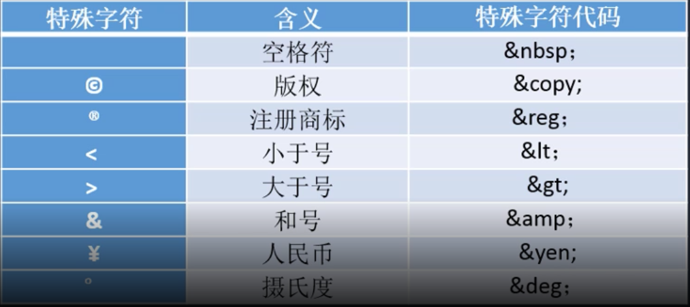

Web
- html1
1 HTML
- 强调文字: strong: 加粗 em: 斜体 sub: 下标 sup: 上表 del: 删除文本 ins: 插入文本
加粗的文字 斜体的文字 下标文本 上标文本 删除文本 插入文本
- 图片: 单标签 src:图片地址 alt: 图片发生错误时可以显示的提示文字 title: 鼠标放到图片上时显示的图片的信息 width-height: 有必要设置图片的宽高设置
 > 当不设定 width height的时候,img元素在加载前 加载中 加载后是不一样的, 展现在用户面前的就有可能不是特别友好.这应该和DOM加载有关．
> 当不设定 width height的时候,img元素在加载前 加载中 加载后是不一样的, 展现在用户面前的就有可能不是特别友好.这应该和DOM加载有关．
- 相对路径: ./ 当前路径 ../上层路径 绝对路径 :
- 跳转链接: a标签 href属性: 链接的地址 target属性: 改变链接的打开方式, 默认情况下: 在当前页面打开 _self 新窗口打开: _blank base: 单标签 改变a链接的默认行为
访问百度 
- 跳转瞄点: 1 利用a链接的方式将#号映射到id属性 2 #号 name属性
- 特殊符号: © ® < > &l ¥ °
script>